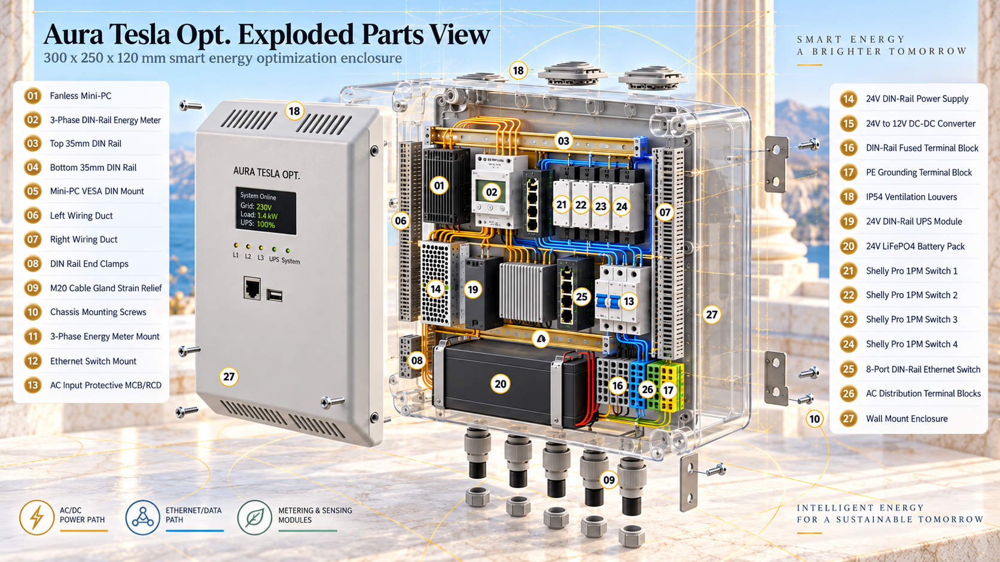

AURA TESLA OPT. V5
PDF
library.
Six print-ready papers with the hardware image, savings range and industrial scaling map.

Plain-language overviews
Professional papers
English professional paper PDF →
Serbian professional paper PDF →
Full prediction and operation
Reading note: the 18%–32% savings figure is a modelled target for suitable scenarios, not independently verified field performance. Local-first data handling depends on private-network deployment and its security policy.